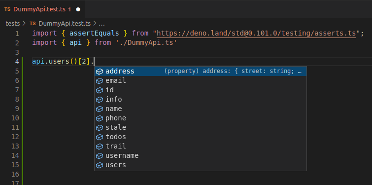

Software engineer at OM MediaWorks
Dutch, living in Stockerau
Full stack software engineer
Working on a headless CMS that:
You probably have been working with them.
In software engineering,
a fluent interface is an object-oriented API
whose design relies extensively on
method chaining.
jQuery('.my-button').fadeOut().remove()
new Person()
.firstName('John')
.lastName('Doo')
.dateOfBirth('05-09-1883')
.save()
await api
.fetch('https://en.wikipedia.org/wiki/Linux')
.querySelector('.infobox tr:nth-child(4) a')
.href()
.fetch()
.querySelector('#firstHeading')
.text()
// Unix-like
await solid.data['https://danielbeeke.nl/']['foaf:img']
// https://danielbeeke.nl/images/daniel.jpg
moment('20111031', 'YYYYMMDD')
.subtract(6, 'days')
.fromNow()
const source = 'https://ruben.verborgh.org/profile/'
const omni = await new Omni(source, { context })
const person = omni.get(source + '/#me')
render(document.body, html`
${person.name}
${person.friends.givenName.map(name => html`
- ${name}
`)}
`);
knex.select('id').from('users')
const offset = state.page * this.pageSize
const limit = this.pageSize
const overviewQuery = query(queryTypes)
.sort({ name: 'asc' })
.filter(filters)
.addSidetrack('authors')
.addSidetrack('category')
.paginate({ offset, limit })
One class instance that is returned with each method.
May have a return method or a .then.
Keeps state in the instance. Great for building queries or entities.
One class instance that is returned with each method.
Methods add commands to queue
.then executes them all.
Each chunk is a new Proxy which has a Promise as the target.
.then resolves the Promise chain.
Allows for unknown keys in the chain.
The mechanics that make it work.
class Thing {
methodA () { return this }
methodB () {
console.log('b')
return this
}
}
const item = new Thing().methodA().methodB()
// b
You can use getter methods in chains
class Thing {
get fruit () {
return 'pear'
}
}
console.log(item.fruit)
// pear
class Thing {
async then (resolve) {
// Do async things here ...
resolve('Hello World')
}
}
const item = new Thing()
console.log(await item)
// Hello World
class Calculator {
#commands = []
add (number) {
this.#commands.push((total) => total + number)
return this
}
minus ...
}
temperatureForCity (city) {
this.#commands.push(async (total) => {
const { lat, lon } = await getLatLonByCityName(city)
const temperature = await getTempByLatLon(lat, lon)
return total + temperature
})
return this
}
class Calculator {
#commands = []
...
async then(resolve) {
let result = 0
for (command of this.#commands)
result = await command(result)
resolve(result)
}
}
const calculator = new Calculator()
const number = await calculator
.add(10)
.minus(4)
.temperatureForCity('Vienna')
// 36
These can be used to return the value. Every segment of the chain appends a new Promise to the previous Promise.
// A Promise chain
const person = await fetch('/user.json')
.then(response => response.json())
.then(response => new Person(response))
A layer on top of an object which can intercept and
redefine fundamental operations on that object.
We might want to have segments with properties we do not know beforehand.
const myObject = { hello: 'world' }
const proxy = new Proxy(myObject, {
get: function(target, prop, receiver) {
return 'Vienna'
}
})
proxy.hello // Vienna
proxy.gutenTag // Vienna
await triggers the .then method
What things could you consider?
html`
${await author.name.given}
${await author.email}
`What about type autocompletion?
TypeScript does not understand a Proxy.
But, we can instruct TypeScript it is dealing with something else.
It start with Generics...
const items: Array<string> = []
function myFunction<Type>(arg: Type) {}
const example1 = myFunction<string>()
const example2 = myFunction<number>()
const example3 = myFunction<Array<string>>()
const example4 = myFunction('Hello World')
function myFunction<Type>(arg: Type): Promise<Type> {
return new Promise(resolve => resolve(arg))
}
We can use this trick to tell TypeScript something acts as a certain type.
function myFunction(arg: string) {
return arg as unknown as number
}
Interested? Here are some links: